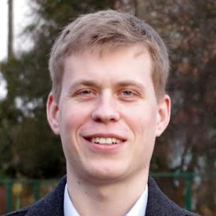

About me
 I am a PhD student at Queen Mary University of London, School of Engineering and Materials Science. I am a member of Advanced Robotics at Queen Mary group (ARQ) led by prof. Kaspar Althoefer.
My research focuses on soft robotics, in particular on soft actuation.
Simultaneously I am a Robotics Research Engineer in Ocado Technology where we work on novel and groundbreaking robotic solutions!
Resume
Education:
- 06/2016 - present:
Queen Mary University of London
PhD in Engineering, Soft Robotics - Soft swimming octopus robot project
- Soft prosthetic hand project
- 02/2013 - 01/2015:
Warsaw University of Technology
Master of Science in Engineering, Automatic Control and Robotics
Master's thesis: Data fusion system for STIFF-FLOP project (soft manipulator)
Final grade: 5.0 (verygood) - 10/2011 - 03/2016:
Warsaw University of Technology
Bachelor of Science in Engineering, Computer Science
6 semesters accomplished - 10/2009 - 02/2013:
Warsaw University of Technology
Bachelor of Science in Engineering, Automatic Control and Robotics
Bachelor thesis: Designing, building and programing a hexapod robot
Final grade: 5.0 (very good) - 10/2010 - 06/2011:
University of Warsaw
Bachelor of Science, Physics
2 semesters accomplished
Professional experience:
- 12.2019 - present:
Ocado Technology - Robotics Research Engineer
- 07/2018 - 10/2018:
Oculus Research/Facebook Reality Labs - Research Intern
- AR Glove Team
- 07/2012 - 01/2020:
Industrial Research Institute for Automation and Measurements PIAP - Robotics engineer & project manager:
- Autonomous submarine robot projects Sledzik and Sabuvis (mapping, navigation, autonomous behavior)
- EU R5COP project (computer vision, human-machine interfaces, stereo-vision based teleoperation - using Oculus DK2 Headset)
- Soft robot control and simulation project Softbot (project management, computer vision, depth perception and modeling)
- Engineering autonomous platform project WIPH (mapping and navigation)
- EU STIFF-FLOP project, soft medical manipulator for minimal invasive surgery (mechanical design, modeling, data fusion and software integration)
- Internship
- Hexapod walking robot project (mechanical design, control algorithms and firmware development)
- GSM module for mobile robotics (firmware development)
Languages:
- Polish (native)
- English (IELTS score 7.0, 2016)
Skills:
- Programming languages
Python, C, C++, C#, Java, MATLAB, LaTeX - Environments
Unix, Robot Operating System, Cad software (Inventor, Fusion 360, AutoCad), LabView, KiCad, STM micro controllers, Arduino, etc
Other:
- 2011, Texas
SAE Aerodesign East Competition, 1st place - Advanced Class - 2009, Poland
National Physics Olympiad finalist - 2004 - present
Flying aircraft modeler - 2000 - 2007
Long distance runner - 2007 8th place in National Polish Youth Olympics, 3000m
Links
- Google Scholar
- Contact me via Linkedin!